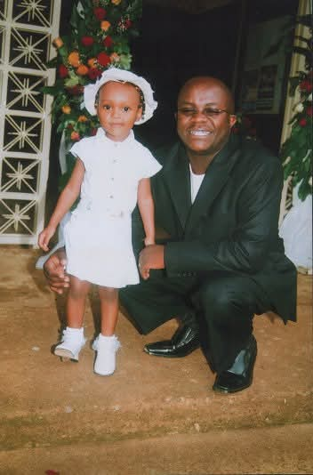

01
The measure of a man
He made people feel seen, supported, and glad to be near him.
He was a great friend, a trusted mentor, a man of faith, a loving father and husband, and someone who always put smiles on people's faces. His strength was gentle, his wisdom was generous, and his presence made ordinary days feel worth remembering.
0
moments of
love and laughter
love and laughter
02
Mentor
He gave direction with patience and believed in the people around him.03
Man of faith
He walked with God, served with humility, and led through example.04
Family man
A loving father and husband whose family stood at the heart of his life.A life in motion
Six frames.
One beautiful story.
Move through a few of the moments that say so much: the family he loved, the journeys he shared, and the faith that guided him.
Memory 1 of 6: Together

The gift he gave us
“Some people leave footprints on our hearts so deep that time can never wash them away.”
On your birthday
We celebrate every laugh, every lesson, and every life you made better.
There is gratitude in remembering you. Gratitude for the friendships you nurtured, the family you cherished, the faith you lived, and the happiness you created simply by being yourself.
Faithful in all things
“Well done, good and faithful servant.”
Matthew 25:23
His faith was not only spoken. It was present in the way he served, encouraged, forgave, and loved.His life in pictures
The moments
we keep.
Twenty-four glimpses of a life rich in family, faith, friendship, travel, and the quiet joy of being together.
In loving memory
Mwai Anthony, your love remains part of who we are.
We will miss your counsel, your laughter, your faith, and the easy way you brought people together. We will remember a great friend and mentor, a loving father and husband, and a man whose life pointed others toward goodness.
Though we cannot make new memories with you, the ones you gave us will keep speaking: in our choices, in our stories, in our prayers, and in every smile your name brings back.
Forever loved. Forever missed. Forever remembered.
A quiet moment
Light a candle for a life that lit up so many others.
May his memory remain a blessing, and may his light continue through us.